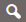
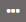
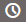
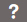

Barre de recherche#
Cette fonction permet, en saisissant librement du texte, d’effectuer des recherches sur les données, les coordonnées et les principaux objets du territoire : commune, adresse, localité postale ou numéro postal (NPA) correspondant, parcelle (bien-fonds), droit distinct et permanent (DDP), lieu-dit, identificateur fédéral de bâtiment (EGID), permis de construire (numéro d’affaire DATEC).
Le symbole affiché à droite de la barre de recherche vous donne une indication sur la situation :
 En attente d’une saisie : L’application est prête à recevoir une nouvelle demande.
 Pas assez de caractères : Il faut saisir au minimum trois caractères pour débuter une recherche.
 En cours de traitement : Une demande peut prendre quelques secondes pour être traitée.
 Aucun résultat : Votre demande n’a pas donné de résultat en retour.
Il peut être nécessaire d’affiner les résultats en précisant votre recherche.
Recherche de lieu#
Un clic sur une des réponses centrera la carte sur le choix effectué.
Recherche de données#
Les données apparaissent sous la barre « Données ». Un clic sur une de ces réponses ajoutera la donnée sur la carte et dans la fenêtre « Couche sélectionnées ».
Lorsqu’il y a trop de réponses, un chiffre indique leur nombre dans la barre « Données ». Il suffit de cliquer sur cette barre pour avoir accès à l’ensemble des réponses.
Recherche de coordonnées#
Des coordonnées peuvent être saisies dans le champ de recherche. Dès que les coordonnées X et Y sont complètes, la carte est centrée sur le point correspondant (à l’intersection des deux lignes jaunes) et une fenêtre de mesure apparaît avec des options à disposition.
La saisie peut être effectuée en coordonnées nationales MN03 ou MN95 (par ex. « 578053 183596 ») ou en degrés décimaux de latitude / longitude (par ex. « 46.8 7.15 »). Le point « . » doit être utilisé comme séparateur décimal.